nature
One of the many reasons I came to Dartmouth is my love of nature. My family and I have been all around the country in search of nature, including Alaska and many of our beautiful National Parks. These are some photos that I have taken in effort to capture the true beauty of the outdoors.
 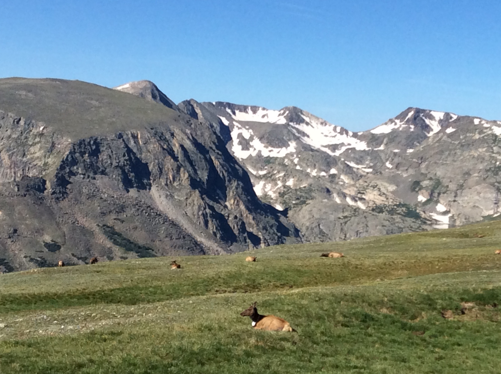
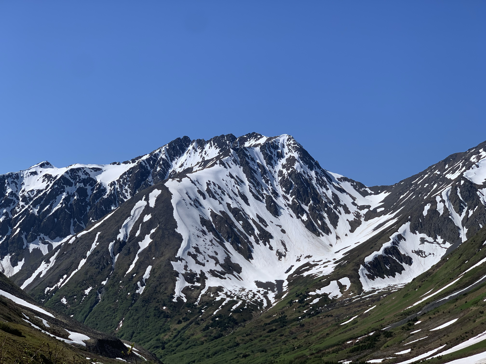
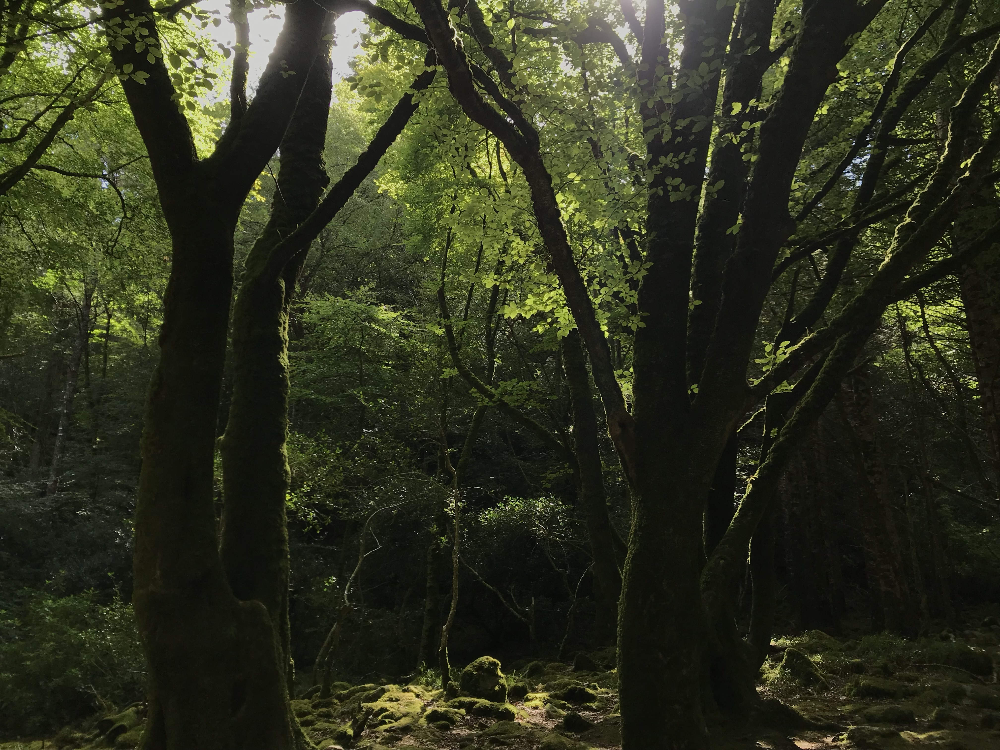
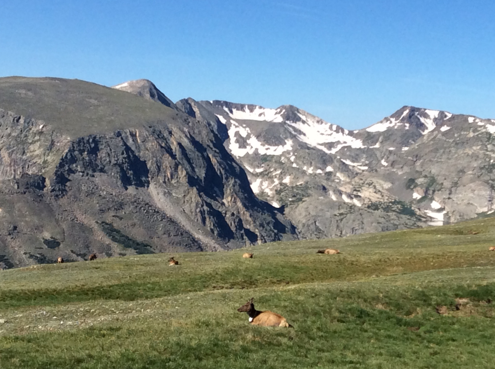
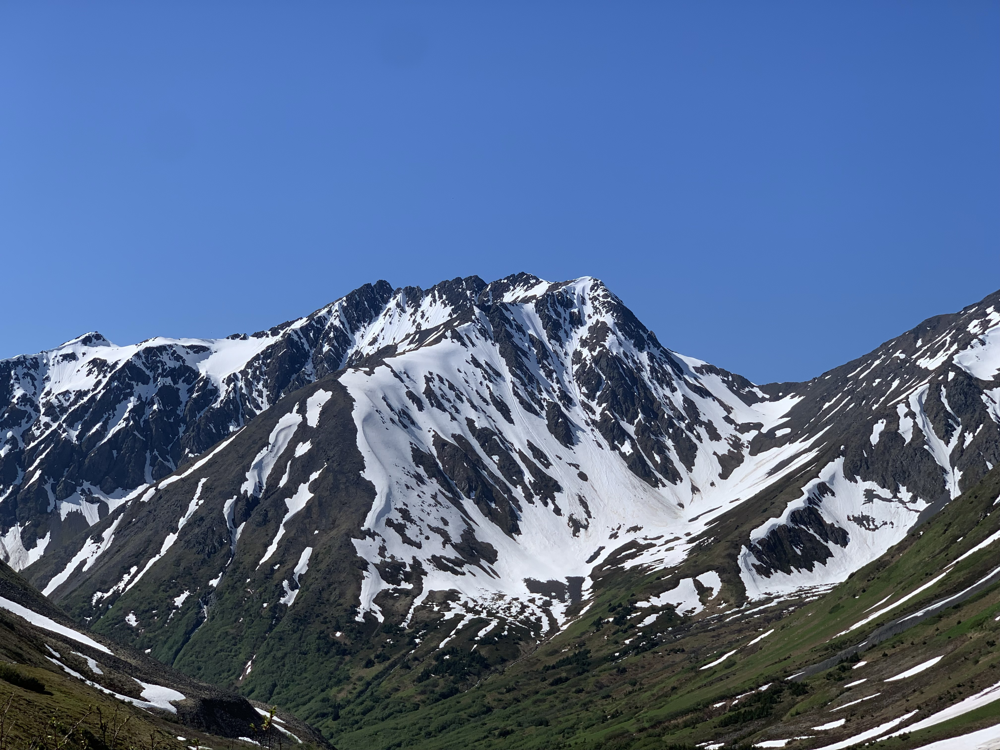
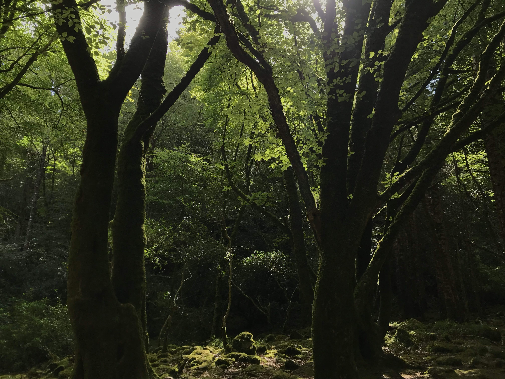

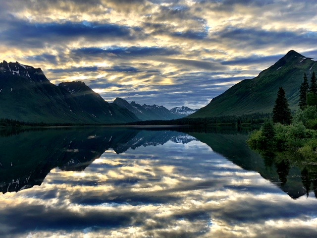
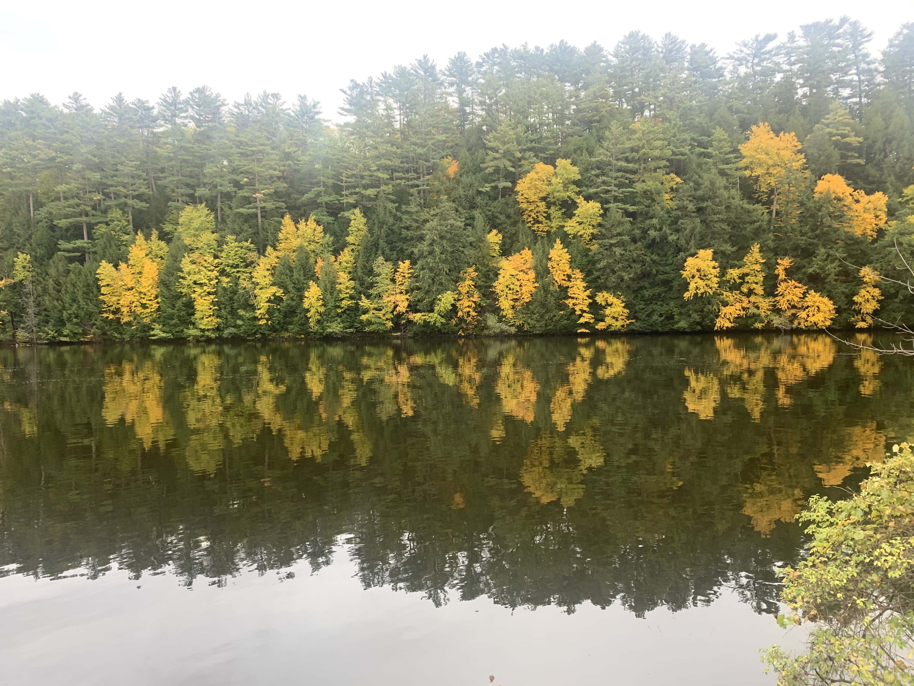
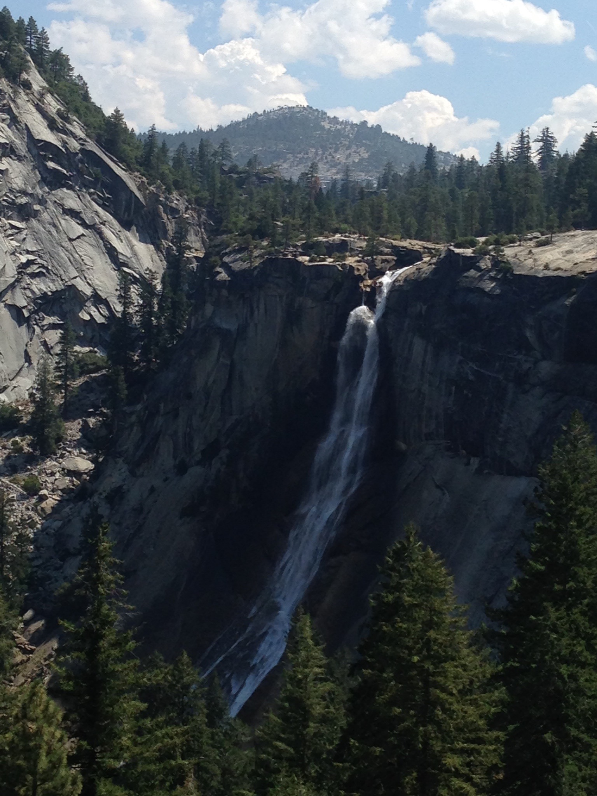
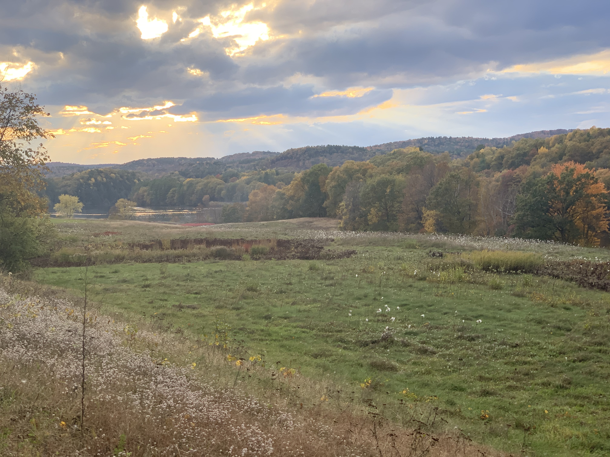
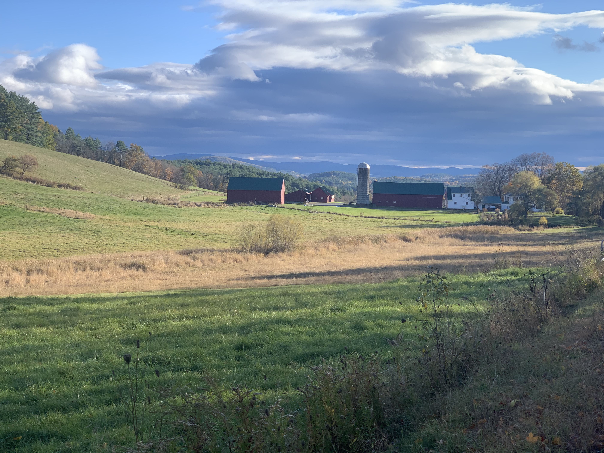
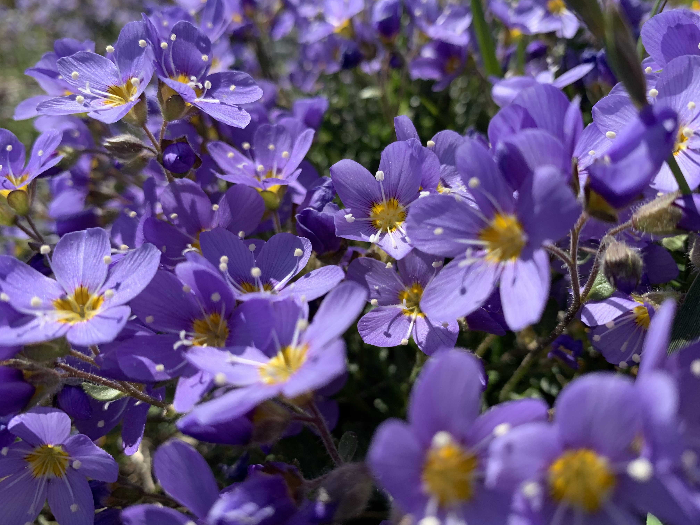
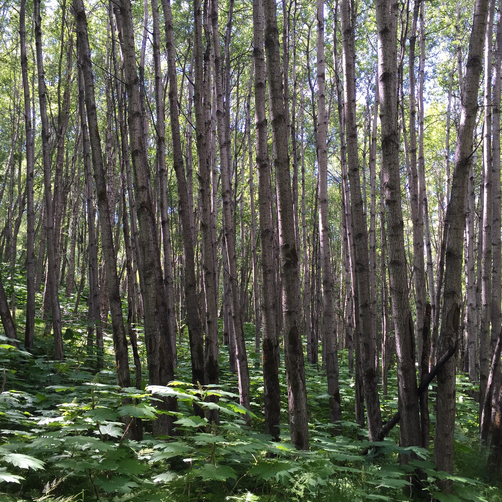